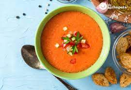
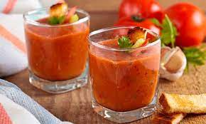

Nos damos una vuelta por la madre patria; En estos tiempos de crisis no sé vosotros, pero yo sólo pienso en comer. Por eso, hoy os traigo un poco de inspiración gastronómica. Quiero compartir con vosotros los platos típicos de España mas precisamente a la provincia del sur.."Andalucía".


Casi es primo hermano del salmorejo, aunque tiene bastantes diferencias con respecto a este. En este caso, se trata de una sopa fría, hecho a base de hortaliza crudas. Es uno de los platos más típicos de Andalucía en verano. Por cierto, ¿sabías que el gazpacho más grande del mundo se hizo en Almería?